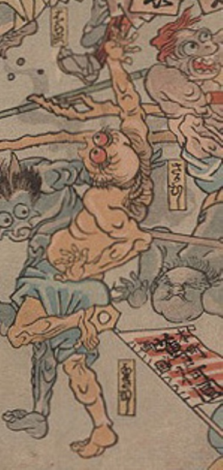

病気；ビョウキ，疫神；エキシン，泣き虫；ナキムシ

泣き虫が擬人化した化物。棒で背を突かれ、のけ反っている。肌は黄色く青い腰巻のみを着けている。見開かれた両の目は赤く、首周りから背中にかけて体毛がみられる。
著作者：歌川芳虎／出典：親書誌：U426_nichibunken_0012：諸病諸薬の戦い；ショビョウショヤクノタタカイ／日付：2006／資源識別子：U426_nichibunken_0012_0006_0000
Copyright (c)2010- International Research Center for Japanese Studies, Kyoto, Japan. All rights reserved.